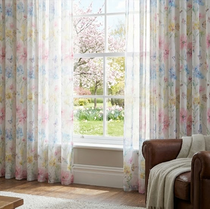

Spring season in Bangladesh, known locally as Bosonto or Basanta, brings pleasant weather, blooming flowers, and a refreshing change after the cooler winter months. During this time, many homeowners like to update their interior décor to reflect the lively and colorful spirit of the season.
Spring curtains often feature floral patterns, pastel colors, and soft textures that reflect the beauty of nature during the Basanta season. Whether you want to update your living room, bedroom, or balcony door, choosing the right spring curtain can enhance your home's interior. At Curtivelle you can find the right spring at a fair price.
Get Free ConsultationTypes of Spring curtains in Bangladesh
Homeowners often choose curtains that allow sunlight to enter while still providing privacy and decorative appeal. Floral prints, soft textures, and pastel colors are particularly popular because they reflect the natural beauty of springtime. Below are some common types of spring curtains used in Bangladeshi homes:
Floral Print CurtainsFloral curtains are a classic spring choice because they reflect the season's fresh and colorful vibe. |
Sheer CurtainsSheer curtains are ideal for spring since they allow plenty of sunlight and fresh air into the room. |
Cotton CurtainsCotton curtains are comfortable and versatile, making them a popular choice for spring homes in Bangladesh. |
Pastel Color CurtainsPastel shades like light blue, soft pink, mint green, or cream fit perfectly with the calm feeling of spring. |
Linen CurtainsLinen curtains offer a relaxed and natural feel that suits the mild weather of spring. |
Printed Pattern CurtainsGeometric or artistic printed curtains can also bring energy and personality to spring interiors. |
Some tips for Spring curtains
In Bangladesh, spring weather is usually warm during the day but still pleasant in the evening. Curtains during this season should allow natural light to brighten the room while maintaining a comfortable indoor environment. Here are some useful tips to help you choose the perfect spring curtains:
- Spring is associated with lively and soft colors. Shades such as light yellow, mint green, sky blue, peach, and lavender create a refreshing interior atmosphere.
- Patterns inspired by flowers, leaves, or nature perfectly match the Basanta season and add visual interest to your room.
- Light fabrics such as cotton, linen, or sheer materials allow airflow and keep the room feeling fresh.
- Spring curtains should filter sunlight rather than block it completely. This helps brighten the room naturally during daytime.
- Using a double-layer curtain system allows flexibility. Sheer curtains can be used during the day, while thicker curtains can be closed at night for privacy.
- Consider matching curtain colors with cushions, rugs, or wall decorations to create a consistent spring theme inside the room.
What to keep in my mind when choosing Spring curtains?
In Bangladesh, spring is the transition period between winter and summer. Therefore, curtains should be breathable enough for warmer days but still provide moderate protection from sunlight. Before buying spring curtains, consider the following factors:
- Choose high-quality fabrics such as cotton, linen, or blended materials that are breathable and comfortable.
- Proper measurement is important to ensure the curtain fully covers the window while maintaining an elegant appearance.
- Spring curtains should allow filtered sunlight. Avoid extremely thick blackout curtains unless they are needed for bedrooms.
- Select curtain colors that match your room’s furniture, wall color, and interior style.
- Spring curtains can collect dust and pollen, so choose fabrics that are easy to wash and maintain.
- Curtains are available at many price levels. Setting a budget beforehand helps narrow down your choices and ensures better value.
Choose Curtivelle for Spring curtains
Selecting a reliable curtain brand is important when upgrading your home décor for the spring season. A high-quality curtain should combine style, durability, and comfort. Curtivelle has become a popular choice for residential curtains because of its modern designs and premium fabric quality. We also offer style-based, seasonal, and interior-based curtain solutions. Here are some reasons why Curtivelle is a good choice for spring curtains:
- Curtivelle uses high-quality fabrics such as cotton, linen, and soft blended materials that are ideal for spring weather.
- Their curtain collections include floral prints, pastel colors, and elegant patterns inspired by nature.
- Curtivelle offers curtain consultancy services to fit different window dimensions perfectly.
- Strong stitching and quality fabrics ensure that the curtains maintain their appearance for a long time.
- Most Curtivelle curtains are designed to be machine washable and easy to maintain.
- Curtivelle curtains can instantly refresh the interior of your home, making rooms look brighter, more modern, and more welcoming.
FAQ about spring curtains
What fabrics are best for spring curtains?
Light and breathable fabrics such as cotton, linen, and sheer materials are ideal for spring curtains.
Which colors are popular for spring curtains?
Pastel and soft colors like light yellow, mint green, sky blue, and soft pink are commonly used in spring curtains.
Are floral patterns good for spring curtains?
Yes, floral and nature-inspired patterns are very popular because they match the fresh and lively mood of the spring season.
Do spring curtains allow sunlight?
Yes, most spring curtains are designed to filter natural sunlight while still providing some privacy.
How often should spring curtains be cleaned?
Spring curtains should be cleaned every 1–2 months to remove dust and maintain freshness.